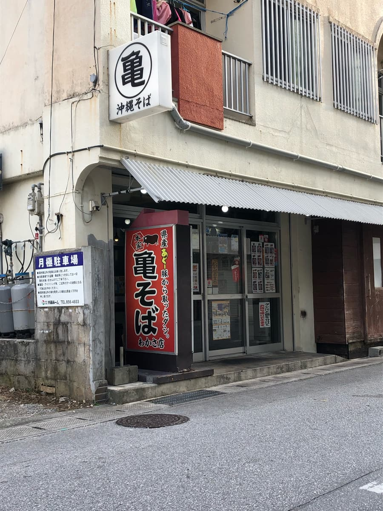
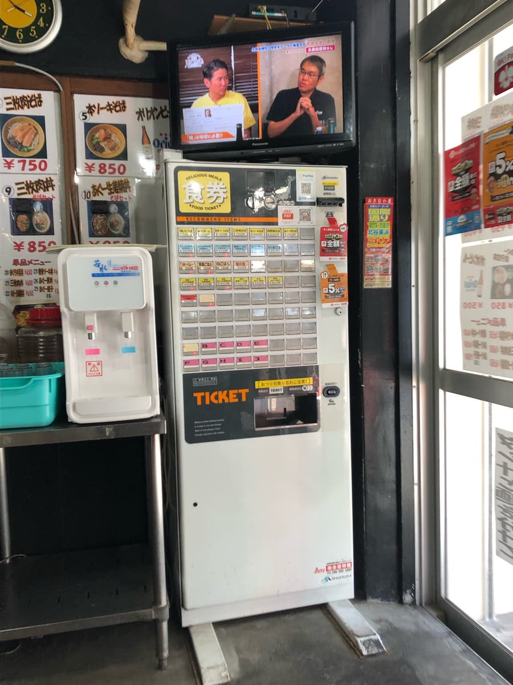
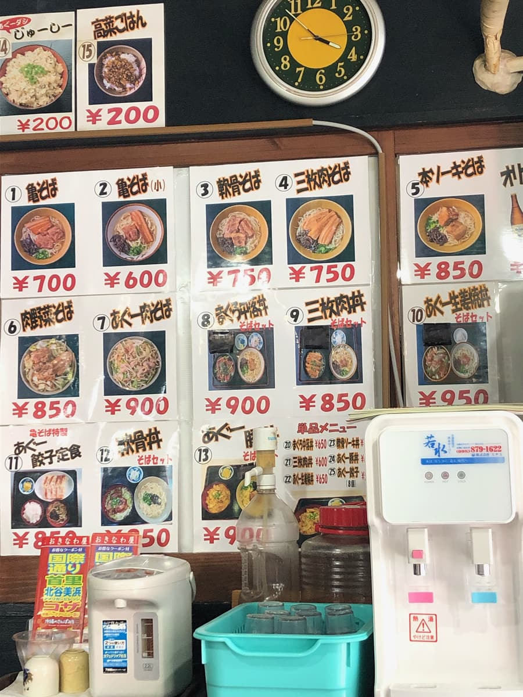
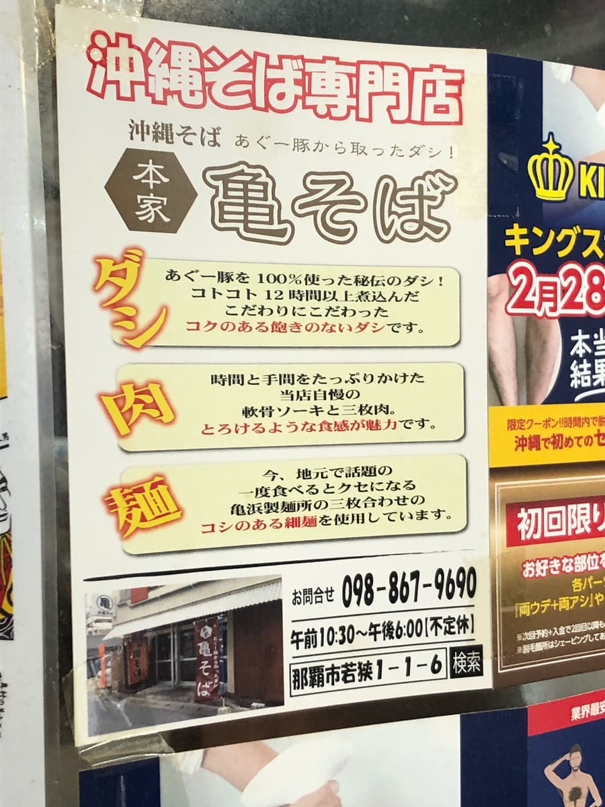
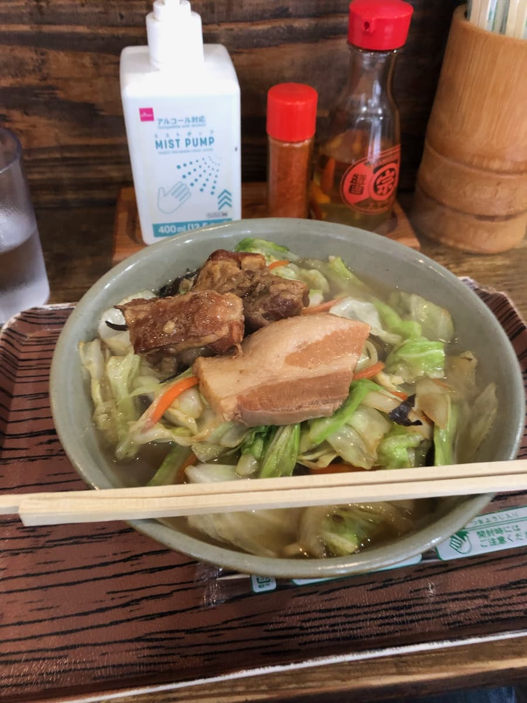
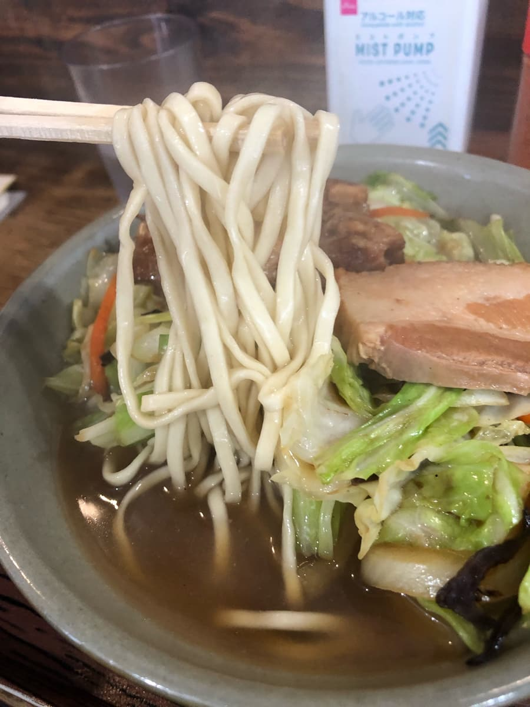

2023.12に食べました。こちらのお店は「第13回沖縄そばスタンプラリー（2023.10.1～2024.2.29）」の参加店で、26店舗目/34店舗として行きました😊


店内に入ると食券機が設置されていて、今回はスタンプラリー冊子で紹介されていた「肉野菜そば」を注文することに。
「また、現金オンリーか」と思ったのですが、右上に何種類かのＱＲコードが😆
PayPayで支払いしようとスマホでQRコードを読み込もうとしたところ、店長さんが「PayPayですか？」と聞いたので「はい」と答えると、「何を注文しますか？」と質問。
「肉野菜そばお願いします」と伝えたところ、「850円入力してください」との指示がｗｗ ＱＲコードを読み込んで850円を入力して支払い完了。
キャッシュレス対応出来てて良いですね👍


お店は別ですが、北中城村の「亀そば（北中店）」で亀そばは食べたことがあるのでなんとなく味の想像は出来ました。

まずはスープを一飲み。今回は野菜そばなので、野菜の味もスープに混じった感じでなんか分かりにくい(^0^;) 何回かスープだけを飲むとやはり、以前の北中店で飲んだことがあるような、アグー豚の出汁はあっさりした優しい感じ。店内に貼られた説明板では、スープは「コクのある」と書いてましたが、あっさりな感じかなと思いました。ですが、普通に美味しいです。

次に麺を頂きます。麺は細麺のストレートタイプですね、店内の説明板では「亀浜製麺所の三枚合わせのコシのある細麺を使用」と書いていましたが、どちらかというと柔らかめな食感かなーと思いました。
軟骨ソーキは、プルプルで普通に美味しいです。ただし、三枚肉は少し筋感がある感じでした。
評価（9点/15点）：普通に美味しいです。前に食べた亀そば北中店よりは美味しく感じました。波の上神宮や、波の上ビーチの近くにありますので、観光で来たときにこちらのお店も如何でしょうか😁
麺 ：★★★☆☆（3）
スープ：★★★☆☆（3）
具 ：★★★☆☆（3）